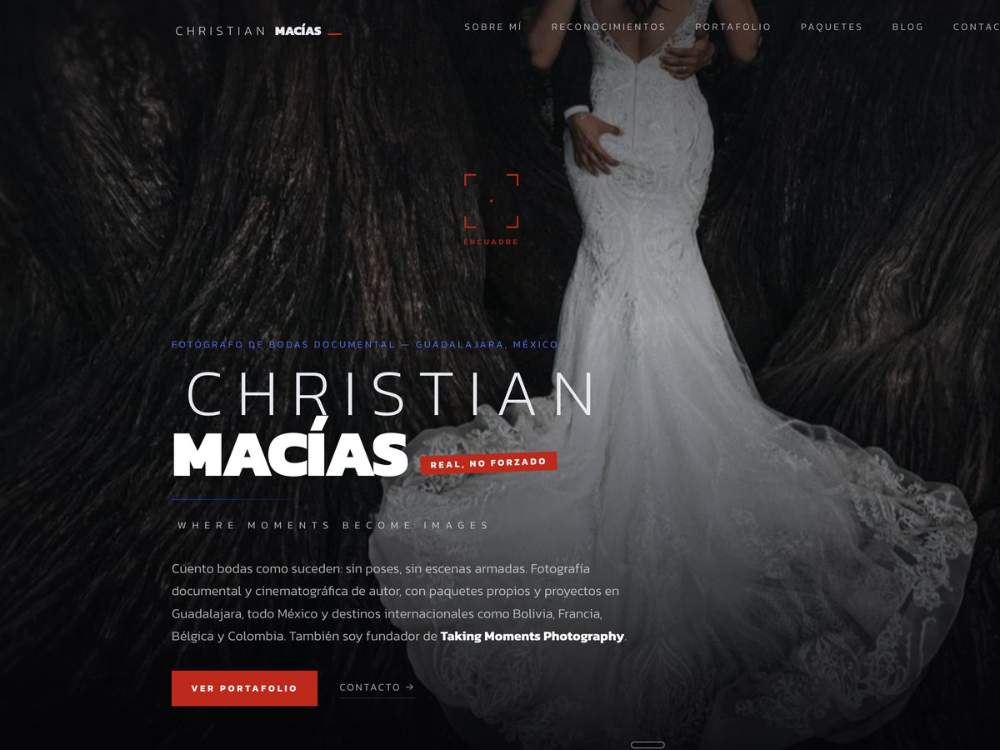
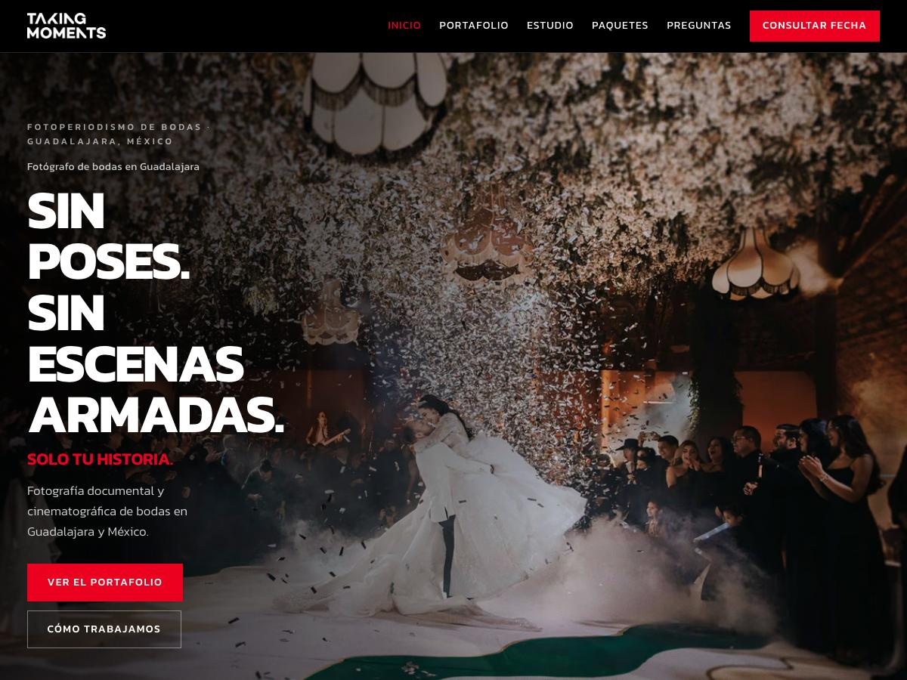
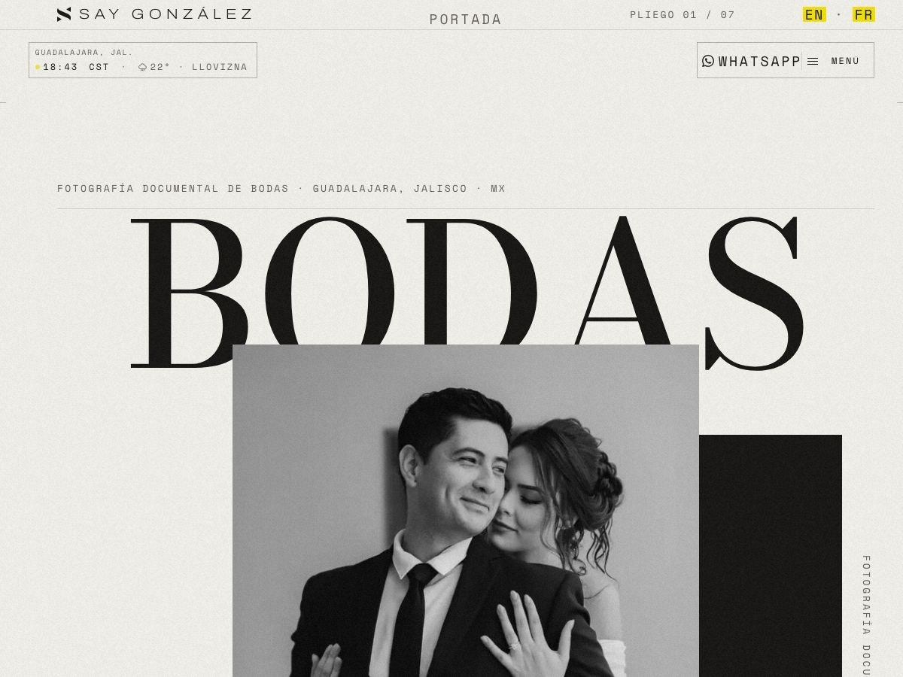

Diseño web · Zapopan
Diseño web en Zapopan
Sitios a la medida con SEO local, para un municipio donde quien te busca casi siempre te busca cerca.
Tres sitios en producción · christianmacias.com · takingmoments.com · saygonzalez.com
Zapopan no es un mercado, son dos. Hay un Zapopan de torres de oficinas, plazas y marcas que compiten con la ciudad entera, y hay un Zapopan de kilómetros de colonias donde el negocio vive de la gente que tiene a diez minutos. Un sitio que funciona para el primero suele ser inútil para el segundo, y al revés. Lo que sí comparten los dos es que aquí la distancia decide: en un municipio de esta extensión, casi toda búsqueda termina siendo una búsqueda de cercanía.
Lo que revisamos en un negocio de Zapopan
Ese es el diagnóstico gratuito: qué está mal y con qué evidencia. Sin llamada de ventas.
Pedir el diagnóstico de tu sitio →Los dos Zapopan, y qué necesita cada uno
01
El que compite con toda la ciudad
Despachos, clínicas, agencias y marcas de Andares, Puerta de Hierro, Valle Real o Patria. Aquí el cliente compara tres sitios antes de escribir, y el tuyo decide en los primeros diez segundos si pareces caro o pareces serio. Diseño propio y contenido que explique bien el servicio.
02
El que vive de su colonia
Talleres, consultorios, veterinarias, cocinas y servicios a domicilio de Tesistán, Santa Ana, Nuevo México, Constitución o la Base Aérea. Aquí no compites con la ciudad: compites con los cuatro que salen en el mapa. Lo que gana es la ficha de Google bien puesta, reseñas y un teléfono que se toque rápido.
03
Y el que vende a los dos
Pasa más de lo que parece: un negocio con local en una zona y servicio a domicilio en media ciudad. Son dos públicos distintos buscando con palabras distintas, y conviene que el sitio tenga una página para cada intención en vez de una sola que intente cubrir ambas.
Dónde trabajamos
En todo Zapopan: Andares, Puerta de Hierro, Valle Real, Providencia, Patria, Ciudad Granja, Santa Ana Tepetitlán, Tesistán, Nuevo México, Constitución, La Base Aérea, El Briseño y las colonias del norte del municipio.
También en el resto de la zona metropolitana. Si tu negocio está del otro lado de la avenida y técnicamente ya es Guadalajara, la página que te toca es diseño web en Guadalajara — el trabajo es el mismo, pero conviene que la ficha de Google diga el municipio correcto.
El trabajo es remoto y la comunicación va por WhatsApp y correo. Estamos en la misma zona metropolitana, así que vernos es posible cuando el proyecto lo pide.
Ver cómo trabajamos, paso por paso →Qué incluye, según el alcance
Semilla — $12,000 a $15,000 MXN
Landing de una página · Base SEO · Ficha de negocio local · WhatsApp conectado 02Raíz — $25,000 a $32,000 MXN
Sitio multi-página · SEO técnico completo con schema · Google Business · Analítica 03Bosque — $42,000 a $55,000 MXN
Todo lo anterior · Bilingüe o trilingüe · Landing pages de campaña · Contenido continuoPago único, no mensualidad. Los tres incluyen diseño responsivo, HTTPS, hosting y entrega del código fuente sin candados. El precio no cambia por la zona: son precios de referencia y la cotización formal se confirma por escrito según el alcance real.
Ver los tres niveles en detalle →Trabajo hecho aquí
Raíz es un estudio nuevo y no vamos a inventar una lista de clientes. Estos son los que hay, los tres de la zona metropolitana.

Diseño a medida · SEO técnico desde el día uno

Diseño a medida · SEO técnico desde el día uno

Auditoría de experiencia · mejoras de navegación
Preguntas de quien busca en Zapopan
¿Cuánto cuesta una página web en Zapopan?+
Entre $12,000 y $55,000 MXN de pago único, según el alcance. Una landing de una página con base SEO va de $12,000 a $15,000; un sitio multi-página con SEO técnico completo, de $25,000 a $32,000. El precio no cambia por la zona de Zapopan en la que estés — lo que cambia el precio es cuántas páginas necesitas y si hay que escribir contenido nuevo.
¿Por qué mi negocio no sale en Google Maps?+
Casi siempre es la ficha de Google Business: no existe, está sin verificar, tiene la categoría equivocada, o la dirección no coincide con la que aparece en tu sitio. En un municipio tan extenso como Zapopan las búsquedas se resuelven mucho por cercanía, así que una ficha mal puesta te deja fuera de resultados donde deberías aparecer, aunque tu sitio esté perfecto.
Mi negocio está en Zapopan pero mis clientes dicen «Guadalajara». ¿Qué pongo?+
Los dos, cada uno en su lugar. La dirección y la ficha de Google llevan Zapopan, que es el dato que Google verifica contra el mundo real. En los textos del sitio sí puedes hablar de la zona metropolitana de Guadalajara, porque es como busca la gente. Lo que no conviene es poner Guadalajara en la dirección cuando el negocio está en Zapopan: Google compara los datos entre tu sitio, tu ficha y los directorios, y la incoherencia resta.
¿Trabajan con negocios de Tesistán o sólo de la zona de Andares?+
De todo el municipio. El nivel de entrada existe precisamente para negocios que no necesitan un sitio grande: una página, bien hecha, con la ficha de Google conectada y el WhatsApp a un toque. Para muchos negocios de colonia eso es todo lo que hace falta, y decirlo nos ahorra tiempo a los dos.
¿Necesito una oficina en Zapopan para posicionarme aquí?+
Necesitas una dirección real y verificable en el municipio, que puede ser tu domicilio si atiendes desde ahí — Google permite ocultarla y mostrar sólo el área de servicio. Lo que no funciona es inventar una dirección o rentar un buzón: Google verifica por correo postal o por video, y cuando detecta el engaño la penalización alcanza a toda la ficha, no sólo a la dirección.
Mándanos tu dominio
Te devolvemos un diagnóstico honesto de tu superficie y de tu subsuelo. Sin llamada de ventas.